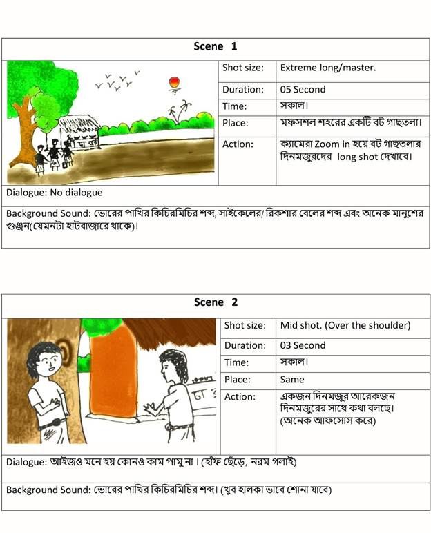

Project information
Project 8
Course Code and Name: MSJ11456 Introduction to Animation (Replacement of Convergence Communication 2)
Project Name: Animated Short film
Project Title: তোদের কি ভয় নাই?
Date of Project: Spring 2020
Project Description:
The purpose of this project was, to aware the upper-class people about the real scenario of the lower-class people during the lockdown situation. We were assigned this task in a group of five people. In this project we showed the sufferings that they face daily. Due to lockdown the people who used to earn on daily basis, suffered a lot to find any work and food for their family. To implement this idea, we create the storyboard first and draw the layout of the visuals. Then I and our team mate Sadman prepare the illustration and after that I did the animation by myself. And the rest of the thing video compilation, voice recording and scripting was done by others.
Project
Justification:
I always feel interested and motivated to do something
go for the society. This project gave me this opportunity showcase the
sufferings of the lower-class people of our society. In this project we choose
this topic not only to complete our course work but also, we try to aware
people about the real situation during the lockdown period. We struggled a lot
to present our idea in to visual execution. Also, to make it emotional and
relatable to our society we went through a lot of references and samplings but
at the end when we make it, it gave us a mental satisfaction that I did a
project that can motivate people to stand by the side of the lower class people
of our society.

Video Link: https://drive.google.com/file/d/1BoZ-jhk1-W08VE-I8lhder90ZmHrr_38/view?usp=share_link
Learnings and outcomes (Self-reflection):
This was an interesting project to work on. It taught me that, I do my projects based on the real situation that can bring changes in our society. However, while working on it, I learnt how to work in an animation project within a team and I was amazed by the final outcome of this project. After completing this project I get the opportunity know:
● How to visualize idea before creating any story.
● How to do the scripting and sample drawing.
● How to bring the emotions in the illustration.
● The purpose and meaning of using any colors in art work.
● How to adjust and interlink visual elements into an animation.
● I also improved my storytelling skill through animation.